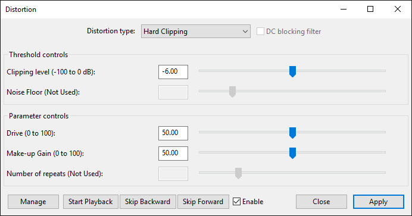

Distortion
From Audacity Development Manual
Use the Distortion effect to make the audio sound distorted. By distorting the waveform the frequency content is changed, which will often make the sound 'crunchy' or 'abrasive'.
Technically this effect is a waveshaper. The result of waveshaping is equivalent to applying non-linear amplification to the audio waveform. Preset shaping functions are provided, each of which produces a different type of distortion.
Presets are provided in the menu, which suggest typical settings for a wide range of uses.
- Accessed by:
- 
For more "analog" sounding distortion, the track should be resampled to a high sampling rate so as to reduce aliasing. Equalization may also be applied, before or after applying the distortion effect to modify the timbre of the distorted audio. |
Distortion type
These are the shaping functions. Each type defines how the input signal is mapped to the output level.
Each distortion type has one or more control parameters that determine how the shaping function is applied. There is a total of five slider controls. The controls are enabled or disabled automatically depending on which "type" of distortion is selected.
Clipping Distortion
Hard Clipping
This type of distortion cuts off peaks at the top and bottom of the waveform. Note that hard clipping is very likely to cause aliasing distortion, which may be undesirable.
- Clipping level (-100 to 0 dB): Peaks greater than this level are cut off. The slider control has a logarithmic scale to allow settings close to 0 dB to be made more easily and accurately.
- Drive (0 to 100): When set to greater than 0, the waveform is amplified this amount (dB) prior to being clipped.
- Make-up Gain (0 to 100): When set greater than 0, the output from the effect is amplified. When set to 100, the amplification is such that an input level of 0 dB (full track height) will produce an output level of 0 dB.
Soft Clipping
This type of distortion is similar to Hard Clipping except that 'corners' where clipping intersects with the waveform are rounded. This is achieved by progressively reducing the gain when the input is above the clipping threshold. The softer the clipping, the more rounded the clipped peaks and the less risk of aliasing distortion.
- Clipping threshold (-100 to 0 dB): The level at which gain reduction (clipping) starts. The slider control has a logarithmic scale to allow settings close to 0 dB to be made more easily and accurately.
- Hardness (0 to 100): The 'hardness' of the clipping (100 % being "hard").
- Make-up Gain (0 to 100): When set greater than 0, the output from the effect is amplified. When set to 100, the amplification is such that an input level of 0 dB (full track height) will produce an output level of 0 dB.
Note that even without "Make-up Gain", the output level may be higher than the clipping threshold because the peaks are in effect 'squashed' flatter rather than being completely cut off.
Overdrive Distortion
Soft Overdrive
This is the "softest" of the overdrive types and produces the least amount of high harmonics. It can be useful for reducing the dynamic range (thus increasing the sustain of musical instruments) while adding the least amount of "crunch" to the sound.
- Distortion amount (0 to 100): The amount / strength of the distortion.
- Output level (0 to 100): An output level adjustment. When set to 0 the output is silent.
Medium Overdrive
- Distortion amount (0 to 100): The amount / strength of the distortion.
- Output level (0 to 100): An output level adjustment. When set to 0 the output is silent.
Hard Overdrive
This is the "hardest" of the overdrive types and produces the greatest amount of high harmonics. This would typically be used for producing a heavily distorted effect.
- Distortion amount (0 to 100): The amount / strength of the distortion.
- Output level (0 to 100): An output level adjustment. When set to 0 the output is silent.
Harmonic Distortion
Cubic Curve (odd harmonics)
This shaping function is often used in electric guitar distortion effects as it is possible to avoid aliasing distortion with only a modest amount of oversampling. This implementation does not use oversampling, though oversampling can be applied manually by resampling the track to a higher rate prior to applying this distortion effect.
One limitation of this type of distortion is that even when applied fully, the effect is still quite mild. Stronger effects can be achieved by applying the algorithm multiple times, which can be achieved by setting the "Repeat processing" control greater than 0.
When applied once only, each frequency component of the sound gains one harmonic overtone that is 3 times the original frequency. When the effect is applied multiple times, additional odd numbered harmonics are created.
- Distortion amount (0 to 100): The amount / strength of the distortion.
- Output level (0 to 100): An output level adjustment. When set to 0 the output is silent.
- Repeat processing (0 to 5): The number of times to repeat the distortion algorithm. When set to 0 the effect is applied once only.
Even Harmonics
This type of distortion produces a series of harmonics that are 2, 4, 6... times the frequency of the original waveform (even numbers). Producing even harmonics requires that the waveform is distorted asymmetrically, which if not corrected will produce substantial DC offset. To counter the DC offset, a DC blocking filter is provided.
- DC blocking filter (checkbox) When checked, a low frequency filter is applied which will reduce the DC component of the processed audio.
- Distortion amount (0 to 100): The amount / strength of the distortion.
- Harmonic brightness (0 to 100): Higher values produce a greater number of harmonics.
Hybrid Distortion
Expand and Compress
The transformation shape for this type of distortion is a sinusoidal "S" shape for both positive and negative going signals. The distortion of high peaks is similar to soft clipping or overdrive, while distortion of low level sounds is similar to crossover distortion.
- Distortion amount (0 to 100): The amount / strength of the distortion.
- Output level (0 to 100): An output level adjustment. When set to 0 the output is silent.
Modeled Distortion
Leveller
This type of distortion is modeled on the "Leveller" (or "Leveler") effect that was included in older versions of Audacity.
- Noise floor (-80 to -20): [default = -70] This is equivalent to the "Noise Threshold" setting in the original "Leveller" effect. It sets the noise threshold for the effect. For audio that is not already at maximum volume, higher threshold settings tend to amplify the audio by a lesser amount, and may reduce the chance of background noise becoming obtrusive.
- Levelling fine adjustment (0 to 100): [default = 0] This is an additional control that was not available in the original effect. It allows fine adjustment of the amounts of "levelling".
- Degree of Levelling (0 to 5): [default = 1] Controls the amount of levelling that is applied to the signal. When the fine adjustment is at zero, the amounts 0 to 5 are equivalent to the original effect choices: 1 = Light, 2 = Moderate, 3 = Heavy, 4 = Heavier, 5 = Heaviest.
Rectifier Distortion
This type of distortion is modeled on a simple electronic component called a rectifier.
- DC blocking filter (checkbox) When checked, a low frequency filter is applied which will reduce the DC component of the processed audio.
- Distortion amount (0 to 100): The amount / strength of the distortion. From 0 to 50 % the lower half of the waveform is progressively clipped (hard clipping) until at 50 % only the upper half of the waveform remains (equivalent to half wave rectification.. From 50 to 100 %, the lower half of the input waveform is progressively reproduced on the positive side (upper half) of the audio channel, until at 100% the waveform comprises of the upper half plus the inverted lower half of the original waveform (equivalent to full wave rectification)
Hard Limiter 1413
This type of distortion is modeled on the "Hard Limiter" LADSPA plug-in that was included in older versions of Audacity. The default settings are different from the original effect (the original defaults would produce no effect).
- dB limit (-100 to 0dB): [default = -6] This is the amplitude level above which the input signal is processed. If the Wet level is 100% and Residue level 0%, the peak level of the result will be clipped down to this level.
- Wet level (-100 to 0dB): [default = 50] This is the percentage of the clipped signal that is fed to the output. It thus acts as a volume control for audio below the dB limit. When set to 100%, all sounds below the dB limit are fed to the output. At lower settings, the volume of the result will be reduced.
- Residue level (-100 to 0dB): [default = 50] This allows a proportion of the signal that has been removed by clipping to be added back to the output and so soften the effect. When set to 0%, all of the clipped signal is discarded. At higher settings, some of the clipped signal will be restored, making the limit softer. More peaks and troughs of the original waveform will be retained, and the resultant volume level will be higher than that set in the dB limit.
The buttons
Clicking on the command buttons give the following results:
- opens a dropdown menu enabling you to select factory presets, save or delete user presets, and see some detail about the tool. For details of these menu items, see Manage presets. The included factory presets are:
- Defaults The factory default setting.
- Hard clip -12dB, 80% make-up gain Distortion that clips peaks at -12 db and then boosts the output level
- Soft clip -12dB, 80% make-up gain Similar to the "Hard clip" preset but with slightly rounded clipping for less aliasing.
- Fuzz Box A clipping effect commonly used with electric guitars.
- Walkie-talkie A heavily distorted effect suggestive of military walkie-talkies. May be used in conjunction with the Equalization effect for a more authentic walkie-talkie effect.
- Blues drive sustain A soft overdrive effect that raises the volume of quiet sounds.
- Light Crunch Overdrive A medium/strong overdrive effect, reminiscent of high input gain on a guitar amplifier.
- Heavy Overdrive Severe distortion. A "turn it up to 11" type effect.
- 3rd Harmonic (Perfect Fifth) When applied to a sine tone, adds one harmonic that is three times the frequency of the original tone.
- Valve Overdrive A fairly subtle overdrive effect with even harmonics. Even harmonics have frequencies that are even number multiples of the original frequencies.
- 2nd Harmonic (Octave) When applied to a sine tone, adds one harmonic that is double the frequency of the original tone (one octave above).
- Gated Expansion Distortion Heavily distorts both high and low level signals, making peaks "crunchy" and quiet parts much quieter.
- Leveller, Light, -70dB noise floor The same as the "Leveller" effect that was shipped in earlier versions of Audacity.
- Leveller, Moderate, -70dB noise floor
- Leveller, Heavy, -70dB noise floor
- Leveller, Heavier, -70dB noise floor
- Leveller, Heaviest, -70dB noise floor
- Half-wave Rectifier Equivalent to half-wave rectification.
- Full-wave Rectifier Equivalent to full-wave rectification.
- Full-wave Rectifier (DC blocked) Equivalent to full-wave rectification with a high pass filter to reduce DC offset
- Percussion Limiter A hard clipping limiter that restores a portion of the clipped peaks to make the distortion less harsh. Can be effective for limiting peaks and adding "bite" to percussive sounds like snare drums and hi-hats.
- ...
- ...
- ...
{kind=link}
- ...
- ...